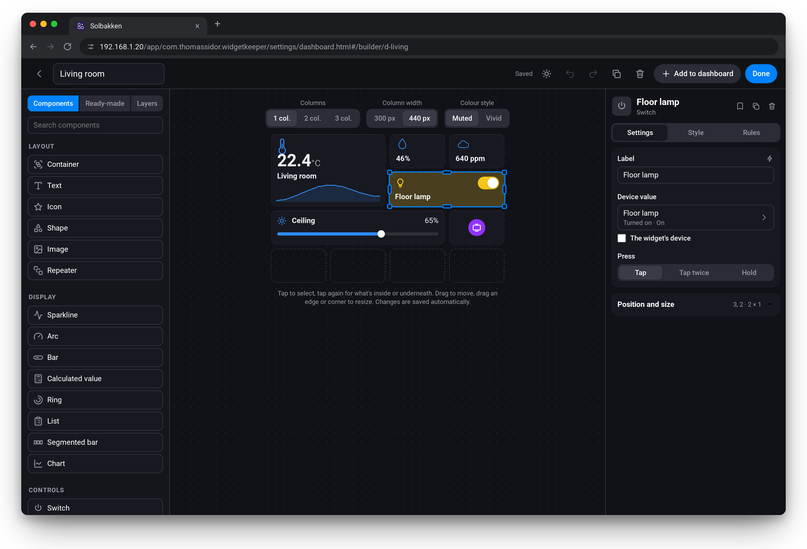
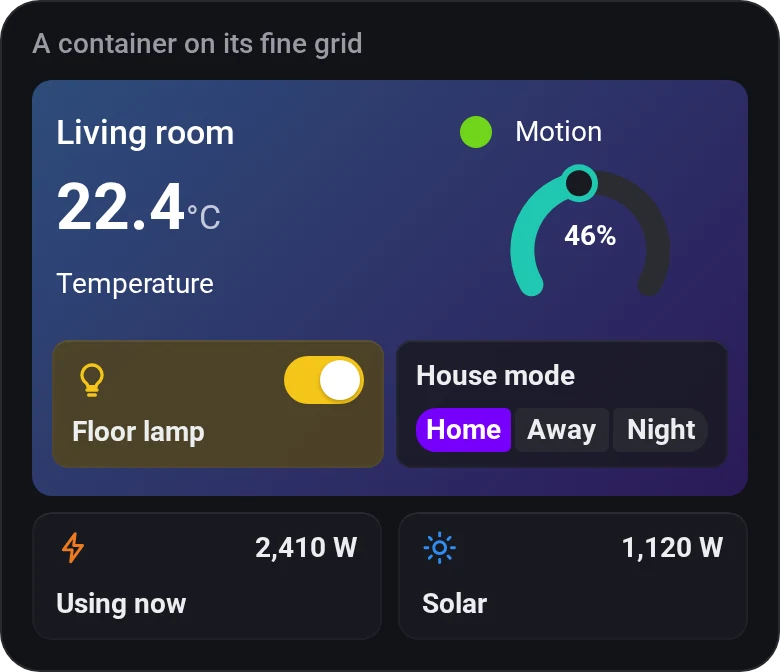
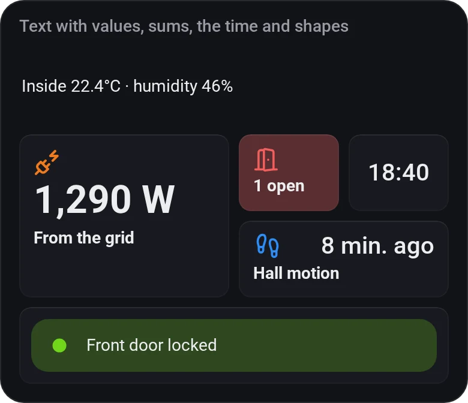
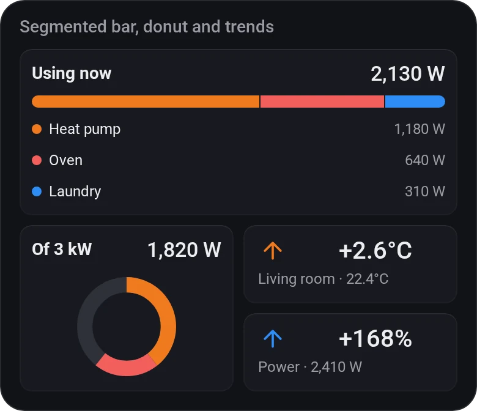
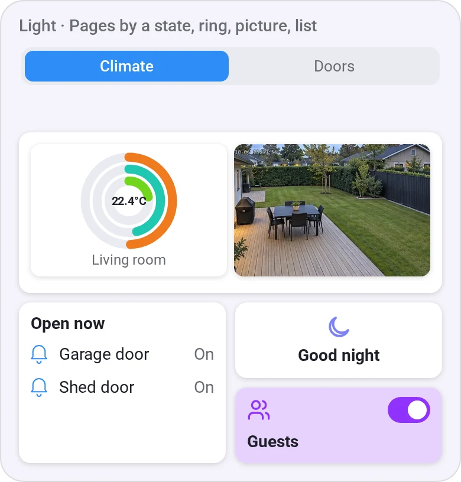
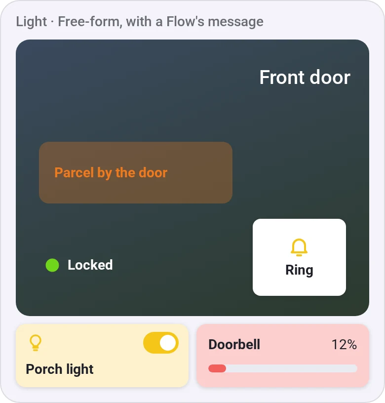
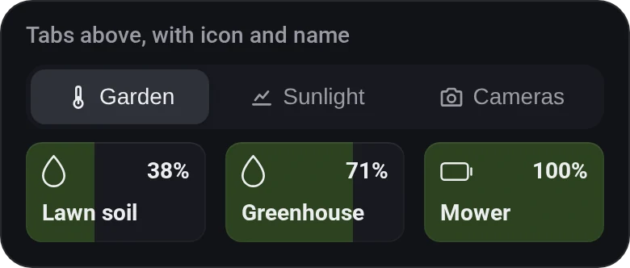
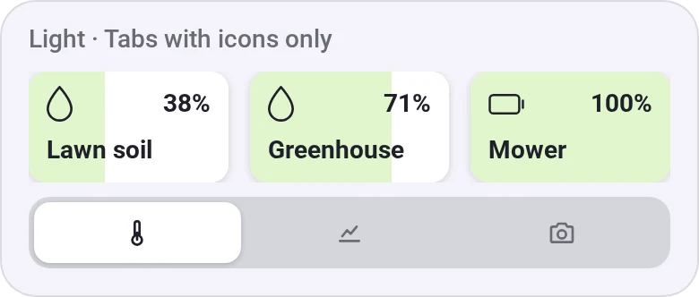
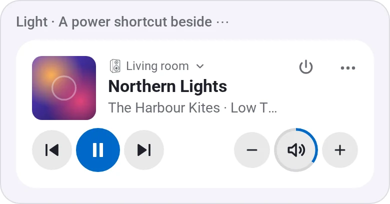

Build your own widget from components, fed by your devices, variables and Flows, and place it on any Homey or web dashboard.
Design a widget of your own on the web dashboards: pick components, place them on a grid, point them at a device, a variable or a Flow. Then put it on any Homey or web dashboard, and a change shows on every copy.

Four designs from the same components: a card with a container, text with values and the time, a power breakdown, and pages turned by a state.




Name an input, such as Door message, and tie any setting to it with the ⚡ beside it: a text, a colour, an icon, whether it shows, the page. Your Flows set it, and every design that uses it follows.

Type any colour on a Flow card, as #FF6B9D or rgb(255, 107, 157), for Device Values, Flow Buttons, Notes and the Widget Builder. White and Black join the colour lists.
Name the pages: tabs with an icon and a name, or icons only, above or below.


Put one of Media's buttons beside ⋯, such as a power button, so it's one tap away.

Every setting of the app's settings page, in the web dashboards' Settings, a tab each, with a full-access API key.